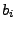
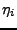
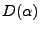
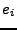
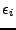
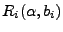
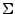

In these two formulations,  and  are equivalent. Thus, the covariance matrices  and are equal to one another, and
Although  and  are not equivalent, the covariance matrices  and  are related as follows,